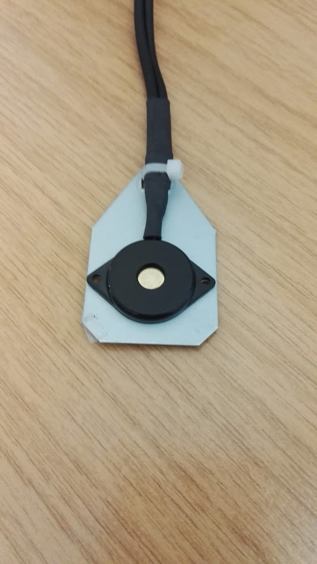
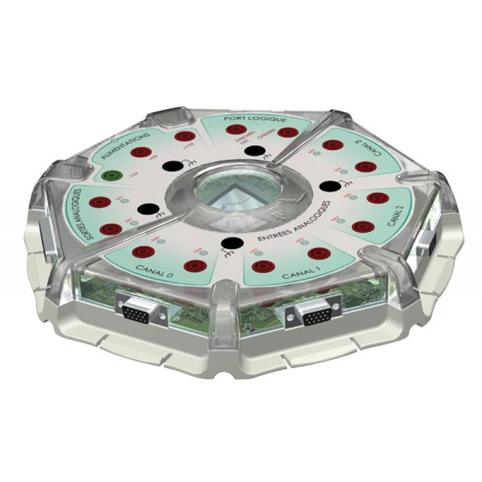
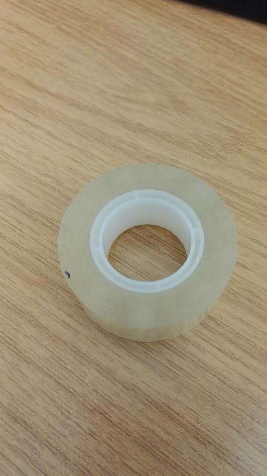
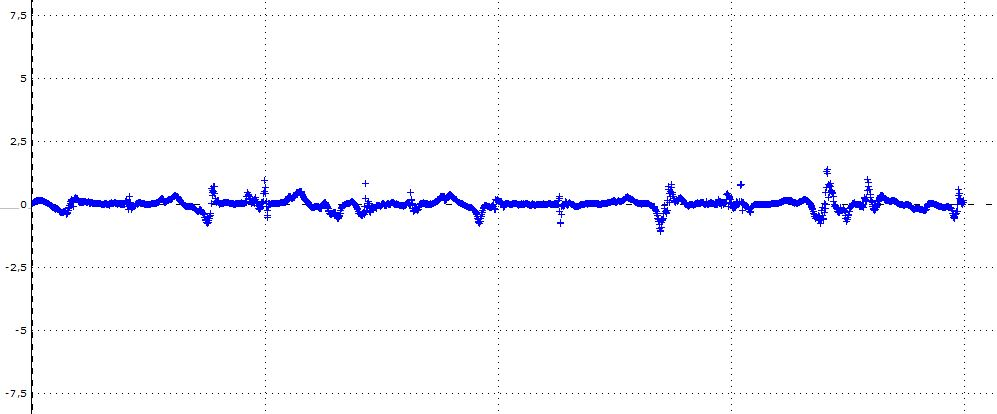
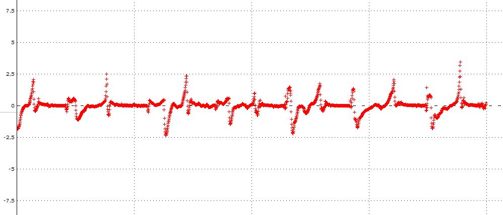
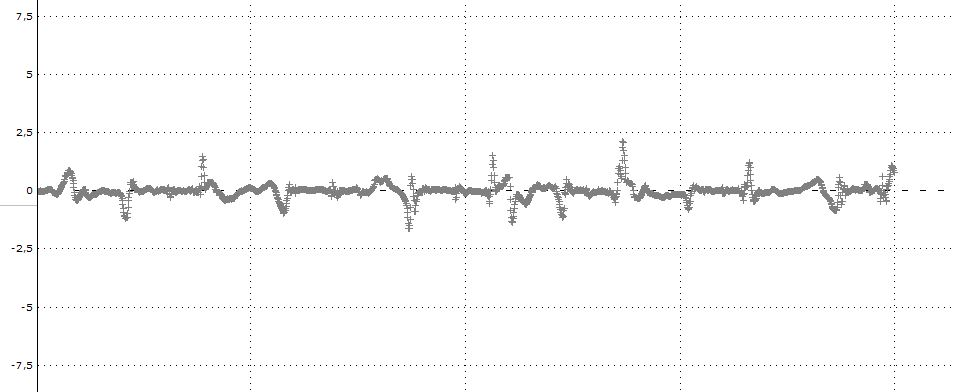
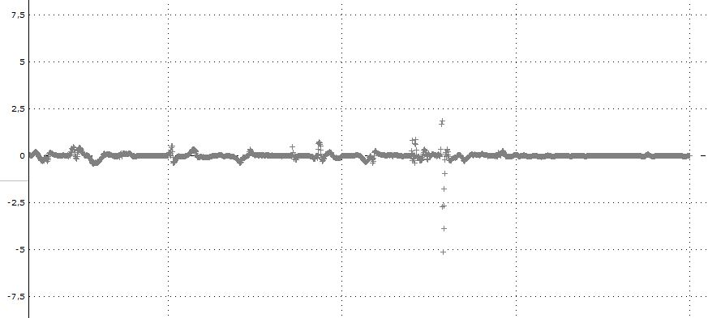

Definition :
“La piézoélectricité est la propriété que possèdent certains corps de se polariser électriquement sous l’action d’une contrainte mécanique et réciproquement de se déformer lorsqu’on leur applique un champ électrique”.
Nous cherchons à calculer l'énergie que nous pouvons produire à l'aide de cellules piezoélectriques.
Protocole :
Nous allons "scotcher" une cellule piezoélectrique au dessous de la semelle de Bilal et mesurer le voltage produit par une marche de 10 secondes. Nous allons donc utiliser le logiciel Latis Pro afin de mesurer le voltage et de tracer
des graphqiues. De plus nous allons déterminer quelle est la zone du pied la plus intéressante pour placer la cellule.
Matériel :
Cellule piezoélectrique :

Centrale Latis :

Du scotch :

et Bilal :
Résultats :
Quand Bilal marche 10s avec la cellule piezoélectrique sous la pointe de sa chaussure :

On peut observer que l'on atteint tout juste 1V à chaque pas.
Sous le milieu du pied :

Cette fois-ci, on atteint 3V à chaque pas, le milieu du pied est donc bien plus aproprié afin de placer une cellule.
Sous le talon :

Sous le talon, le voltage est légèrement plus faible, on atteint 2V à chaque pas
Ensuite, nous avons décidé de tester une cellule dans la chaussure :

Le résultat est très décevant, on atteint à peine 1V
Conclusion :
Nous avons pu observer que en mettant une cellule sous le milieu du pied, on pouvait obtenir un voltage satisfaisant
Partie 2 : Trouver l'intensité générée (avec des maths)
On a F la pression appliquée par Bilal à chaque pas (la moitié de son poid) sur la surface de la cellule, d33 le coefficient piezoélectrique qui dépend du matériau de la cellule (ici du quartz) et Q la charge électrique générée par la contrainte mechanique
Or comme nous l'ont appris les documents scientifiques (allez check la bibliographie pour plus d'informations) que nous avons consultés :
Q = d33 x F
On sait que F = 196.2N/2.8x10-15m2 et d33 = 2.33x10-12
Par conséquent, dans le cas de Bilal, la charge en Coulombs générée par Bilal à chaque pas est de 1.456x10-6C
Or 1C = 1000mAs donc Bilal génère 1.456x10-3mAs ce qui nous fait donc à peu près 5mAh.
Cela signifie
que pendant une marche de 1h, Bilal peut générer 5mA, ce qui permettrait de rechrger une batterie de 3500mAh à hauteur de 0.15%
Conclusion sur la piezoélectricité :
Nous avons vu grace à nos expériences que l'on peut en effet produire de l'énergie grâce à des cellules piezoélectriques. Cependant, elles sont trop peu efficaces afin d'être utilisées dans le cadre d'un usage personnel.
Malgré cela, nous pourrions
envisager des routes ou même un sol très féquenté bardé de cellules piezoélectriques, la contrainte mechanique d'une foule ou de plusieures voitures serait suffisante afin de recharger des objets connectés dans des points de recharge libres ou même
pour alimenter l'éclairage public